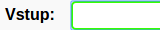
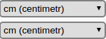
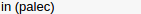
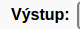
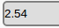

chrome = App("google-chrome") chrome.open() #otevře aplikaci definovanou výše chrome.focus() #vybere do popředí její okno wait() #čeká, dokud na obrazovce nenajde obrázek paste(, "http://oks.kiv.zcu.cz/Prevodnik") #najde na obrazovce obrázek a vloží do něho text type(Key.ENTER) #simuluje stisk klávesy ENTER click() #najde na obrazovce obrázek a klikne na něj wait() paste(, "1") click(Pattern().targetOffset(-27,-18)) click() click() T = find().right(100).text() #přečte text z části, která je 100px vpravo od nalezeného obrázku if T == "2.54": popup("Ok textově") #pokud rozpoznaný text souhlasí se zadaným, otevře se vyskakovací okno else: popError("Chyba") #jinak se zobrazí chybové okno if exists(): popup("Ok obrazově") #pokud na obrazovce existuje obrázek, otevře se vyskakovací okno else: popError("Chyba") #jinak se zobrazí chybové okno chrome.close() #ukončí aplikace